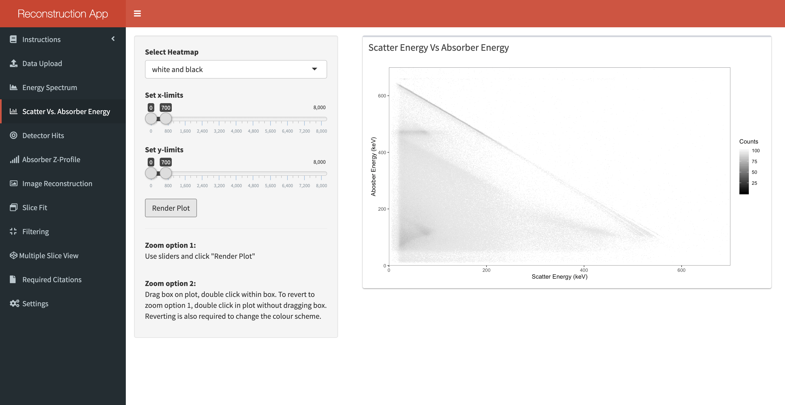

2.3 Energy Matrix
This tab dislpays the energy deposited in the scatter detector (x-axis) against the energy deposited in the absorber detector (y-axis). Diagonal lines indicate photopeaks in the energy spectrum and horizontal/vertical lines can be an indication of several unwanted phenomena.

A colour scheme for the 2D plot can be selected from the top drop-down menu. To apply the choice, you must click the “Render Plot” button at the bottom of the options pane. Clicking once anywhere on the plotting region will display the energy deposited in each detector at that point, along with the summed energy. This can be useful for identifying specific photopeaks.
There are two methods to zoom into a region. First, you can use the sliders and once satisfied click the “Render Plot” button. Alternatively, you can drag a rectange across the region of interest and then double click on the highlighted shape. Either method is valid but to return functonality to the “Render Plot” button after using the second method, you must first double click on the plot without dragging a rectangle.